Tanx — Roi Chimère
Patch de Référence :
v0.111.0 Beta(Dernier patch officiel) Acte d'apparition : Acte 3 Déblocage (Epoch) :NoneThème Visuel / Couleur :#731717
🎨 Portraits & Illustrations
| Icône Ancien | Illustration Principale |
|---|---|
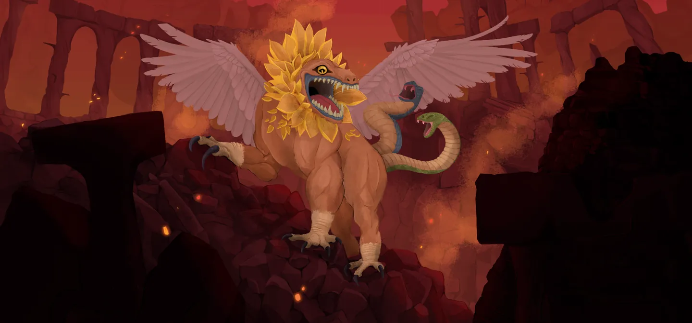 |
🎮 Intégration Visuelle GBA (Butano)
- Palette suggérée pour la GBA : Teinte dominante
#731717. À mapper sur une palette 16 couleurs (15 couleurs + transparent) pour le BG de portrait. - Dimensions portrait GBA : 64x64 pixels (mode 4 bpp tilemap) positionné à
(X: 16, Y: 24)sur l'écran 240x160. - Couleur des boutons / encadrements UI :
rgba(13, 5, 0, 0.5)converti en code couleur GBA 15-bit BGR555.
📜 Rôle & Lore dans l'Ascension
🎲 Règles des Slots & Choix
- Nombre total d'options : 10 reliques disponibles.
- Structure des tirages : 1 slot(s).
- Slot #1 : 3 choix parmi 10 reliques présentées.
🏆 Catalogue Complet des Reliques (Classées par Tier)
⭐ Tier S (2 reliques)
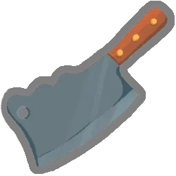
Couperet à viande (MEAT_CLEAVER)
- Tier :
S| Rareté :Ancient - Description : Vous pouvez Cuisiner aux Sites de Repos.
- Implémentation GBA C++ : Effet Majeur Prioritaire : À implémenter en priorité dans le prototype MVP en raison de son fort impact stratégique.
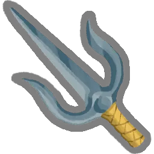
Saï (SAI)
- Tier :
S| Rareté :Ancient - Description : Au début de votre tour, gagnez 7 d'Armure.
- Implémentation GBA C++ : Effet Majeur Prioritaire : À implémenter en priorité dans le prototype MVP en raison de son fort impact stratégique.
⭐ Tier A (4 reliques)
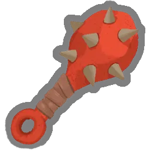
Gourdin de fer (IRON_CLUB)
- Tier :
A| Rareté :Ancient - Description : Toutes les 4 cartes jouées, vous piochez 1 carte.
- Implémentation GBA C++ : Effet Passif : Hook standard dans
RelicManageravec écouteur d'événement (ON_COMBAT_START,ON_TURN_START, etc.).
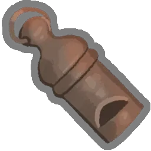
Sifflet de Tanx (TANXS_WHISTLE)
- Tier :
A| Rareté :Ancient - Description : Ajoutez 1 Sifflet à votre Deck.
- Implémentation GBA C++ : Mécanique de Deck : Ajoute
Sifflet(WHISTLE) au deck du joueur lors de la sélection. Nécessite l'enregistrement de l'ID de carte dansCardPool.
Cartes Dérivées / Associées :
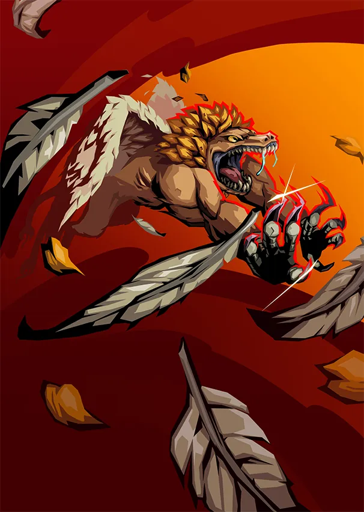
Sifflet (WHISTLE) — Attaque (Coût :2⚡)- Effet de base : Infligez 33 dégâts. Étourdissez l'ennemi. Épuisement.
- Effet amélioré : Infligez 44 dégâts. Étourdissez l'ennemi. Épuisement.
- Amélioration :
damage: +11
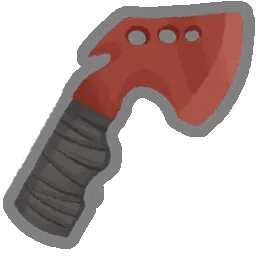
Hache de lancer (THROWING_AXE)
- Tier :
A| Rareté :Ancient - Description : La première carte que vous jouez chaque combat est jouée une fois de plus.
- Implémentation GBA C++ : Effet Passif : Hook standard dans
RelicManageravec écouteur d'événement (ON_COMBAT_START,ON_TURN_START, etc.).
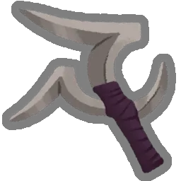
Tri-boomerang (TRI_BOOMERANG)
- Tier :
A| Rareté :Ancient - Description : Choisissez 3 Attaques de votre Deck. Envoûtez-les avec Instinct.
- Implémentation GBA C++ : Effet Passif : Hook standard dans
RelicManageravec écouteur d'événement (ON_COMBAT_START,ON_TURN_START, etc.).
⭐ Tier B (1 relique)
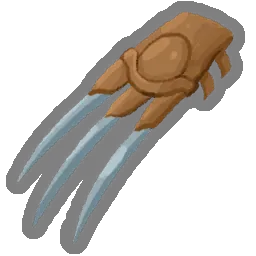
Griffes (CLAWS)
- Tier :
B| Rareté :Ancient - Description : Transformez jusqu'à 6 cartes en Mutilation.
- Implémentation GBA C++ : Mécanique de Deck : Ajoute
Mutilation(MAUL) au deck du joueur lors de la sélection. Nécessite l'enregistrement de l'ID de carte dansCardPool.
Cartes Dérivées / Associées :
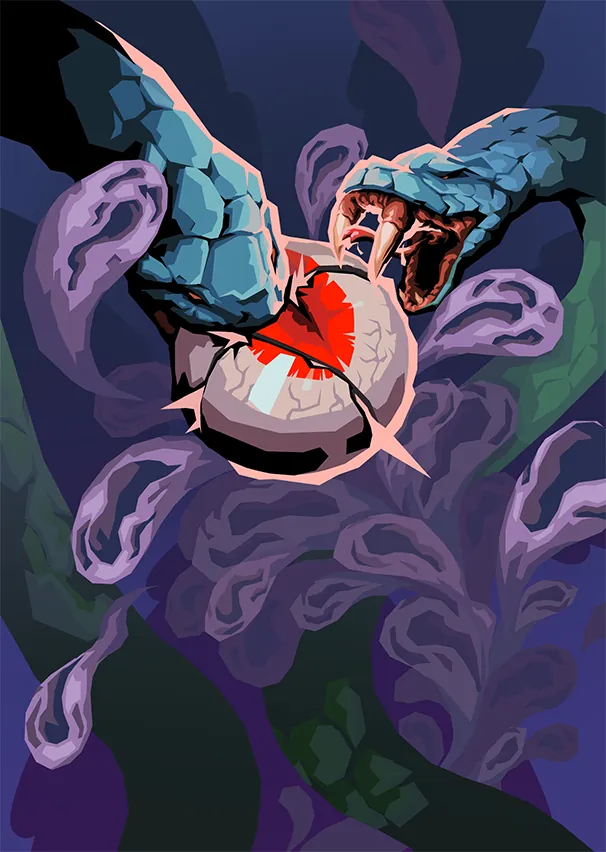
Mutilation (MAUL) — Attaque (Coût :1⚡)- Effet de base : Infligez 5 dégâts 2 fois. Augmentez les dégâts de TOUTES les cartes Mutilation de 2 jusqu'à la fin du combat.
- Effet amélioré : Infligez 6 dégâts 2 fois. Augmentez les dégâts de TOUTES les cartes Mutilation de 3 jusqu'à la fin du combat.
- Amélioration :
damage: +1, increase: +1
⭐ Tier C (1 relique)
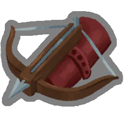
Arbalète (CROSSBOW)
- Tier :
C| Rareté :Ancient - Description : Au début de votre tour, ajoutez une Attaque aléatoire à votre Main. Elle coûte 0 ce tour.
- Implémentation GBA C++ : Effet Passif : Hook standard dans
RelicManageravec écouteur d'événement (ON_COMBAT_START,ON_TURN_START, etc.).
⭐ Tier D (2 reliques)
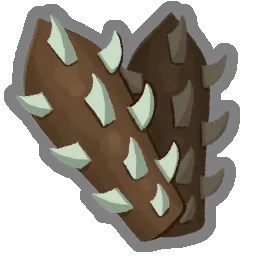
Gantelets à pointes (SPIKED_GAUNTLETS)
- Tier :
D| Rareté :Ancient - Description : Gagnez ⚡1⚡ au début de chaque tour. Les Pouvoirs coûtent 1 ⚡ supplémentaire.
- Implémentation GBA C++ : Effet Passif : Hook standard dans
RelicManageravec écouteur d'événement (ON_COMBAT_START,ON_TURN_START, etc.).
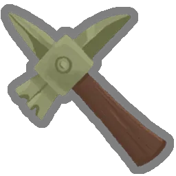
Marteau de guerre (WAR_HAMMER)
- Tier :
D| Rareté :Ancient - Description : Lorsque vous tuez un Élite, Améliorez 4 cartes aléatoires.
- Implémentation GBA C++ : Effet Passif : Hook standard dans
RelicManageravec écouteur d'événement (ON_COMBAT_START,ON_TURN_START, etc.).
💬 Dialogues & Répliques
Les dialogues s'affichent dans la boîte de dialogue inférieure (240x40 px) sur la GBA avec défilement fluide au bouton A :
🗣️ Première Rencontre (Toutes runs confondues)
- 👑 Ancien :
SI FAIBLE ! MAIS TANT DE POTENTIEL !
PRENDS CETTE ARME !!
🗣️ Soldat de Fer (Ironclad)
-
👑 Ancien :
QUELLE IMPRESSIONNANTE ÉPÉE, GUERRIER ! TU FERAIS BON USAGE DE PLUS D'ARMES ENCORE !
-
👑 Ancien :
DES ARMES POUR LE GUERRIER ! CHOISIS TON ARME ! ET AU COMBAT !
-
👑 Ancien :
AU COMBAT, SOLDAT DE FER !!
-
👤 IRONCLAD :
Le Soldat de Fer affronte Tanx.
-
👑 Ancien :
OUIII !! UN GLORIEUX COMBAT, EMPORTE DONC UNE ARME AVEC TOI !
🗣️ La Silencieuse (Silent)
-
👑 Ancien :
UNE CHASSERESSE ! JE VAIS AIGUISER TES GRIFFES !!
-
👑 Ancien :
POURQUOI DES COUTEAUX !! SI PEU PUISSANT !
-
👑 Ancien :
TU ES SI PETITE ! JE VAIS TE MUSCLER !
-
👤 SILENT :
La Silencieuse s'échappe furtivement, emportant avec elle une arme.
-
👑 Ancien :
OÙ ES-TU PASSÉE !!!
🗣️ Le Défectueux (Defect)
-
👑 Ancien :
PUISSANT ASSEMBLAGE ! JE VAIS TE RENDRE ENCORE PLUS PUISSANT !
-
👑 Ancien :
TES ORBES NE SONT PAS DE VRAIES ARMES !!
-
👑 Ancien :
AU COMBAT, DÉFECTUEUX !!
-
👤 DEFECT :
Le Défectueux combat avec vaillance.
-
👑 Ancien :
TES ORBES SONT DES ARMES !?
🗣️ Le Régent (Regent)
-
👑 Ancien :
ORANGE !? COMMENT UN ÊTRE VIVANT PEUT-IL ÊTRE ORANGE !??
-
👤 REGENT :
Tout le monde sait que l'orange est la couleur royale par excellence !
-
👑 Ancien :
INCROYABLE ! SI PUISSANT !!
-
👑 Ancien :
ÊTRE ORANGE !! CHOISIS TON ARME !
-
👑 Ancien :
AU COMBAT, RÉGENT!!
-
👤 REGENT :
Non ! Nous avons combattu la dernière fois que j'étais ici !
-
👑 Ancien :
ENCORE UN COMBAT !!
🗣️ La Nécrolieuse (Necrobinder)
-
👑 Ancien :
QUELLE FAUX IMPRESSIONNANTE !
-
👤 NECROBINDER :
Oui, spécialement fabriquée dans un but de vengeance.
-
👑 Ancien :
LA MAIN DÉSIRE-T-ELLE UNE ARME !?
-
👑 Ancien :
AU COMBAT, TITOS !!
-
👑 Ancien :
AU COMBAT, TISSE-MORT !!
-
👤 NECROBINDER :
La Tisse-Mort et Titos se bagarrent avec Tanx.
-
👑 Ancien :
QUEL FORMIDABLE TRAVAIL D'ÉQUIPE !! EMPORTEZ DONC UNE ARME !
🗣️ Générique (Tout Personnage)
-
👑 Ancien :
ENTRAÎNE-TOI POUR QU'ON PUISSE SE BATTRE !!!
-
👑 Ancien :
ENTRAÎNE-TOI POUR QUE NOUS PUISSIONS NOUS BATTRE !!!
⬅️ Retour au Sommaire de la Bible | ⚙️ Spécifications Techniques GBA